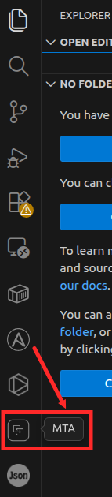
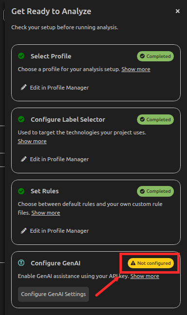
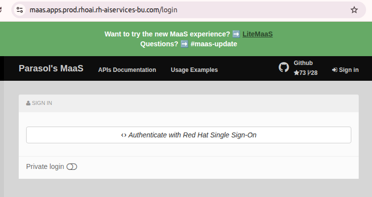

Lab 2: Configure MTA with Developer Lightspeed
In this lab, you prepare the development environment for application modernization by configuring the Migration Toolkit for Applications (MTA) extension in Visual Studio Code and enabling Developer Lightspeed with Generative AI settings. This setup establishes the foundation for analyzing the legacy Coolstore application deployed in the previous lab.
Instructions
-
Launch Visual Studio Code. From the lower-left corner, select the Settings (gear) icon, and then choose Extensions to open the Extensions Marketplace.

-
In the Extensions search bar, search for Migration Toolkit for Applications (MTA) and install the extension.

-
Once the installation is complete, verify that the MTA extension icon appears in the left-hand Activity Bar. Select this icon to open the MTA analysis view.
 -
From the top-right corner of the Visual Studio Code window, select the Settings option to access the MTA configuration panel.

-
In the settings view, observe that Generative AI (GenAI) is not yet configured. Select Configure GenAI Settings to begin the configuration process.
 -
Before proceeding with the GenAI configuration, open a web browser and navigate to the Red Hat Model-as-a-Service (MaaS) portal url below.
https://maas.apps.prod.rhoai.rh-aiservices-bu.com/ -
Sign in using your Red Hat credentials.
 -
After successfully signing in, navigate to Apps and API Keys, as shown in the reference image.

-
Select Create New Application to begin registering a new application.

-
Choose the AI service to associate with the application. For this lab, select the Llama-4-Scout service.

-
Provide a meaningful application name and description, then select Create Application to complete the registration.

-
Once the application is created, copy and securely store the Endpoint URL and API Key, as these values will be required in subsequent configuration steps.

-
Return to the MTA Analysis view in Visual Studio Code to configure Generative AI settings. Enter the copied API Key and Endpoint URL, ensuring that /v1 is appended to the end of the endpoint URL.
environment: ALWAYS_APPLIED_KEY: "envvar to be set regardless of which model is active" ALLOW_INSECURE: "true" models: RedHat-MaaS: &active environment: OPENAI_API_KEY: "XXXXXXXXXXXXX" provider: ChatOpenAI args: model: llama-4-scout-17b-16e-w4a16 temperature: 0.2 configuration: baseURL: "https://llama-4-scout-17b-16e-w4a16-maas-apicast-production.apps.prod.rhoai.rh-aiservices-bu.com:443/v1" active: *active -
Return back to the MTA Analysis View and confirm the Configure GenAI shows Completed.